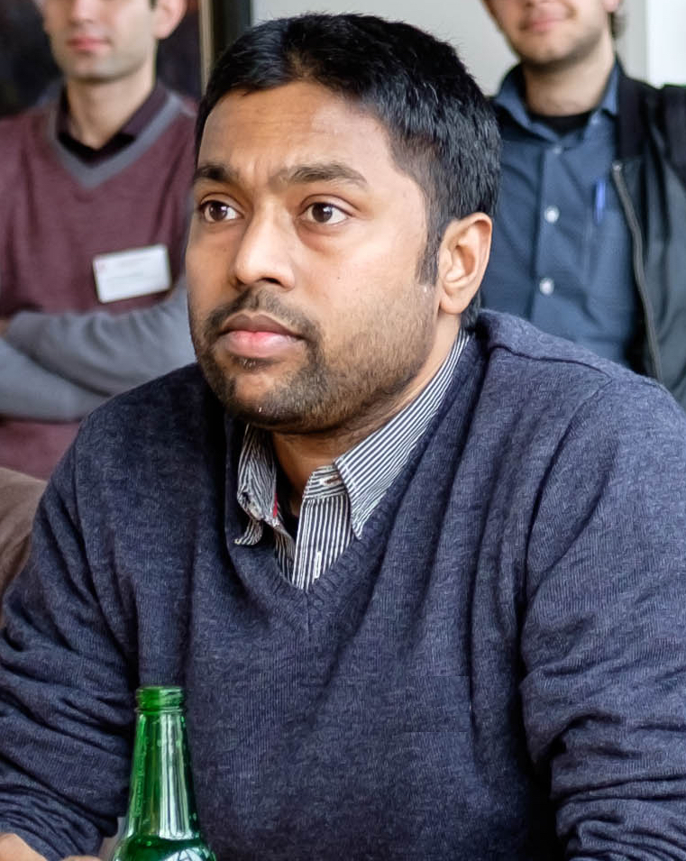

| ------------------------------------------------------------------------------------------ |
Umesh Patil Postdoc researcher Computational Linguistics Group Institute of Cognitive Science University of Osnabrück 49069 Osnabrück, Germany email: first name DOT last name AT gmail DOT com office: +49-541-969-3372 mobile: +49-17621986788 |
------------------- |  | |||||||||
| ------------- |
[ research interests ] Sentence processing, cognitive modeling, interaction of syntax and working memory, impaired sentence processing. |
------------- | ||||||||||||||||||||||||||||||
| ------------- |
[ short bio ]
|
------------- |
||||||||||||||||||||||||||||||
| ------------- |
[ publications ] Articles Umesh Patil, Shravan Vasishth, and Richard L. Lewis. 2016. Retrieval interference in syntactic processing: The case of reflexive binding in English. Frontiers in Psychology. [ pdf | data + analysis] Umesh Patil, Sandra Hanne, Frank Burchert, Ria De Bleser, and Shravan Vasishth. 2016. A computational evaluation of sentence processing deficits in aphasia. Cognitive Science. 40(1): 5-50. [ pdf | code (ACT-R models) ] Umesh Patil, Shravan Vasishth, and Reinhold Kliegl. 2009. Compound effect of probabilistic disambiguation and memory retrievals on sentence processing: Evidence from an eye-tracking corpus. Proceedings of the 9th International Conference on Cognitive Modeling, Manchester, UK. [ pdf ] Marisa Ferrara Boston, John Hale, Reinhold Kliegl, Umesh Patil, and Shravan Vasishth. 2008. Parsing costs as predictors of reading difficulty: An evaluation using the Potsdam Sentence Corpus Journal of Eye Movement Research 2(1): 1-12. [ pdf ] Umesh Patil, Gerrit Kentner, Anja Gollrad, Frank Kuegler, Caroline Fery, and Shravan Vasishth. 2008. Focus, word order and intonation in Hindi. Journal of South Asian Linguistics 1(1): 55-72. [ pdf ] Peer-reviewed conference (abstracts and posters) Umesh Patil, Peter Bosch, and Lea Penning. 2015. Intra-sentential referential behaviour of German demonstratives Poster presentation at AMLaP sentence processing conference, Malta. [ abstract (pdf) ] [ poster (pdf) ] Peter Bosch, Stefan Hinterwimmer, and Umesh Patil. 2015. Perspective as a parameter of prominence. The case of German demonstrative pronouns. Oral presentation at the International Conference "Prominence in Language", University of Cologne, Cologne. Umesh Patil, Sandra Hanne, Shravan Vasishth, Frank Burchert, and Ria De Bleser. 2013. Evaluating the Trace Deletion Hypothesis and processing deficit accounts: a computational modeling approach. Oral presentation at the 51st Annual Meeting of the Academy of Aphasia, Lucerne, Switzerland. [ abstract (pdf) ] Umesh Patil, Sandra Hanne, Shravan Vasishth, and Frank Burchert. 2013. Modeling individual differences in processing deficits in aphasia Poster presentation at the 26th Annual Meeting of the CUNY Conference on Human Sentence Processing, Columbia, SC, USA. [ abstract (pdf) ] [ poster (pdf) ] Umesh Patil, Shravan Vasishth, and Richard Lewis. 2012. Early effect of retrieval interference on reflexive binding Oral presentation at the 35th GLOW Colloquium, Potsdam, Germany. [ abstract (pdf) ] Umesh Patil, Sandra Hanne, Shravan Vasishth, Frank Burchert, and Ria De Bleser. 2011. Modeling offline and online (eye movements) sentence comprehension in aphasia using the cue-based retrieval architecture Oral presentation at the 49th Annual Meeting of the Academy of Aphasia, Montréal, Canada. [ abstract (pdf) ] Umesh Patil, Shravan Vasishth, and Richard Lewis. 2011. Are grammatical constraints immune to retrieval interference? Oral presentation at the 10th International Symposium of Psycholinguistics, Donostia - San Sebastián, Spain. [ abstract (html) ] Umesh Patil, Shravan Vasishth, and Richard Lewis. 2011. Early retrieval interference in syntax-guided antecedent search Oral presentation at the 24th Annual Meeting of the CUNY Conference on Human Sentence Processing, Stanford, USA. [ abstract (pdf) ] Umesh Patil, Sandra Hanne, Shravan Vasishth, Frank Burchert, and Ria De Bleser. 2011. Modeling aphasic sentence comprehension in a cue-based retrieval architecture Poster presentation at the 24th Annual Meeting of the CUNY Conference on Human Sentence Processing, Stanford, USA. [ abstract (pdf) ] [ poster (pdf) ] Umesh Patil, Shravan Vasishth, and Reinhold Kliegl. 2009. Compound effect of probabilistic disambiguation and memory retrievals on sentence processing: Evidence from an eye-tracking corpus. Proceedings of the 9th International Conference on Cognitive Modeling, Manchester, UK. [ pdf ] Umesh Patil, Marisa Ferrara Boston, John T. Hale, Shravan Vasishth, and Reinhold Kliegl. 2009. The interaction of surprisal and working memory cost during reading. Poster presentation at the 22nd Annual Meeting of the CUNY Conference on Human Sentence Processing, UC Davis, USA. Umesh Patil, Shravan Vasishth, Brian Bartek, and Richard Lewis. 2008. The Interplay of Locality and Surprisal. Poster presentation at the 21st Annual Meeting of the CUNY Conference on Human Sentence Processing, UNC, Chapel Hill, USA. Shravan Vasishth, Marisa F. Boston, Umesh Patil, John Hale, and Reinhold Kliegl. 2007. Integrating Sentence Processing Theory with Eye-movement control models. Poster presentation at AMLaP sentence processing conference, Turku, Finland. Heiner Drenhaus, Shravan Vasishth, Kristin Wittich, and Umesh Patil. 2007. Locality and working memory capacity: An ERP study of German. Poster presentation at AMLaP sentence processing conference, Turku, Finland. | |||||||||||||||||||||||||||||||
| ------------- |
[ teaching ] Winter 2016 : Introduction to analysis of linguistic data with R Summer 2016: Cognitive Modeling in Linguistics Summer 2016: Linguistic Theory and Cognition (with Peter Bosch, Maria Cieschinger and Eleni Gregoromichelaki) Winter 2015 : Pronouns (with Peter Bosch) Summer 2015: Linguistic Theory and Cognition (with Peter Bosch and Maria Cieschinger) Winter 2014 : Introduction to analysis of linguistic data with R |
------------- |